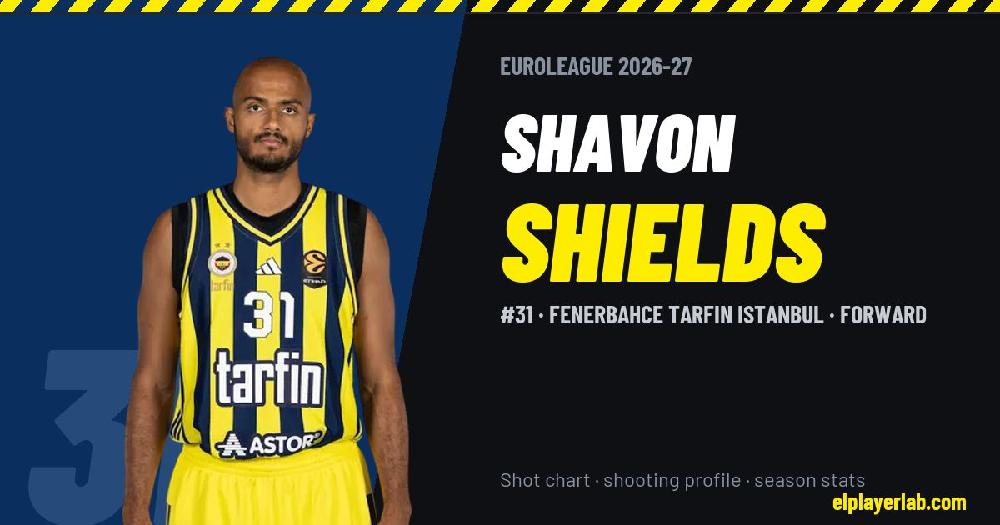

Fenerbahce Tarfin Istanbul · Euroleague 2026-27
Shavon Shields
#31 · Forward · Fenerbahce Tarfin Istanbul · 2026-27 · 3 games · 8.0 pts · 2.7 reb · 1.3 ast a game

- Number
- 31
- Position
- Forward
- Height
- 201 cm
- Weight
- 98 kg
- Born
- 1994-06-05
- Country
- Denmark
Career
- Fenerbahce 2026-2027
- Olimpia Milano 2020-2026
- Baskonia 2018-2020
- Aquila Trento 2017-2018
- Skyliners Frankfurt 2016-2017
- Nebraska (NCAA) 2012-2016
Euroleague Player Lab: shot charts, shooting profiles and season stats for every player, rebuilt after every game.